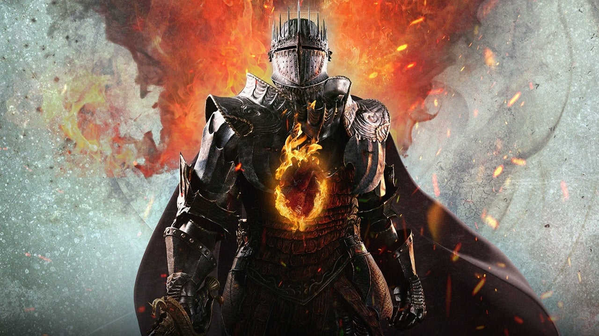

Dragon's Dogma 2
Uma sequência de Dragon's Dogma (2012), o jogo se passa em um mundo de fantasia paralelo ao primeiro jogo. Os jogadores controlam um personagem customizável através do mundo aberto do jogo enquanto caçam um dragão que os escolheu como o “Arisen” em meio a um conflito geopolítico, completando missões e ganhando novos equipamentos no caminho com a ajuda de aliados conhecidos como “Peões".
Dragon's Dogma 2 foi lançado para PlayStation 5, Windows e Xbox Series X/S em 22 de março de 2024. O jogo recebeu críticas geralmente positivas dos críticos. Vendeu 2,5 milhões de unidades.